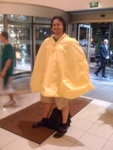

Paris in the spring
I just got back from the IEEE ISBE 08 conference in Paris. 1st time I ever visited the french capital, and very nice it was too. I was impressed by their efforts to remove all the dog poo that famously carpets their streets, with an ingenious street irrigation system. I never got mucky shoes once!
Wednesday morning I went for a walk up to Notre Dame and took a few photos. Didn’t spot Quasimodo swinging from the bell tower, but that disappointment was allayed by the beauty of the architecture and gardens. Everyone likes a well constructed flying buttress.
The weather was a bit erratic, and I had to resort to my bike anorak at one point, which looked very chic in combination with my shorts, sock and sandals. Who says I’ve got no fashion sense? The food was very nice indeed.

Paris in the spring
Sunday, May 18, 2008
